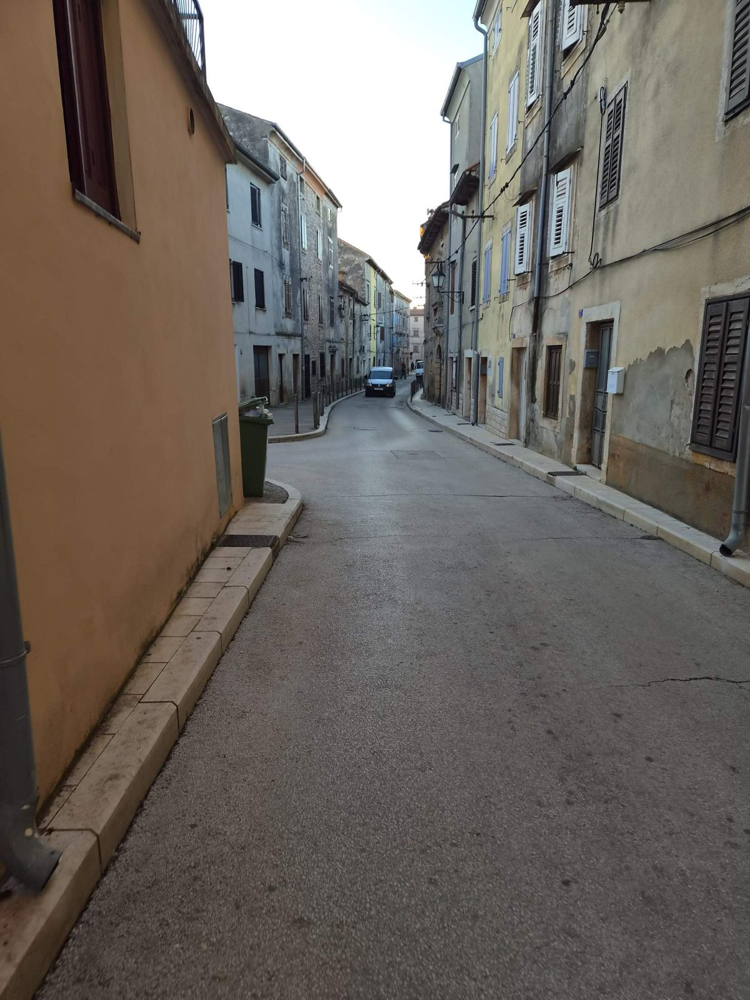
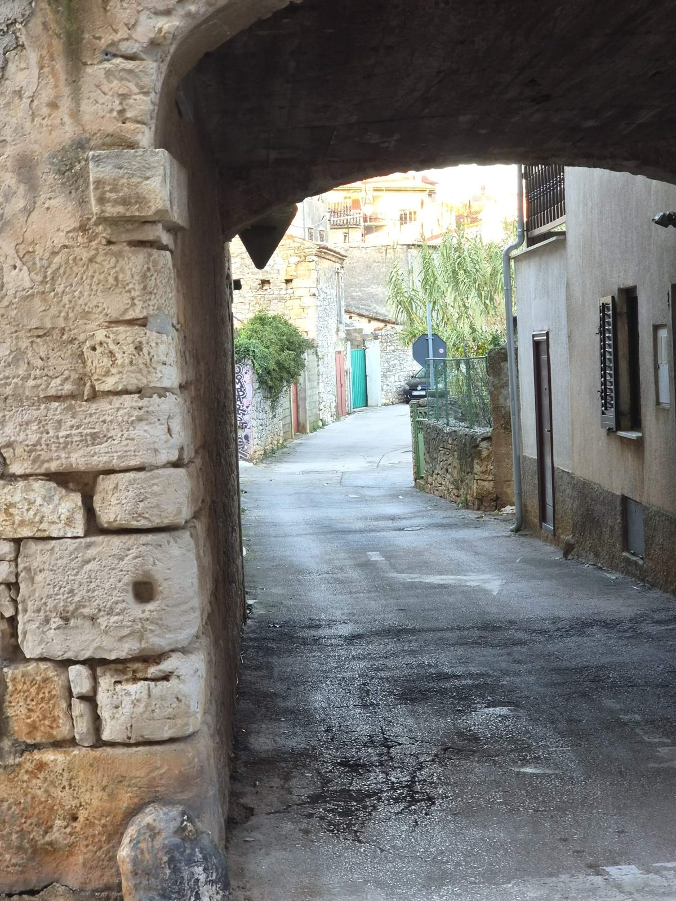
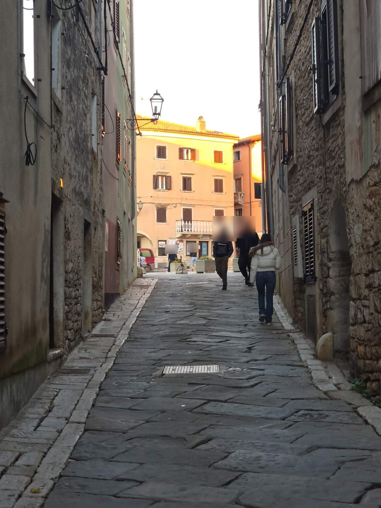
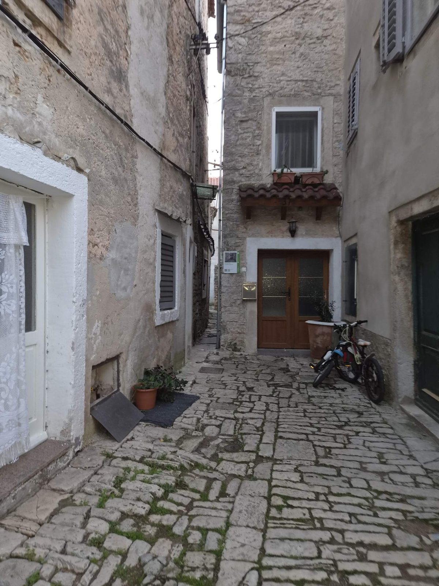
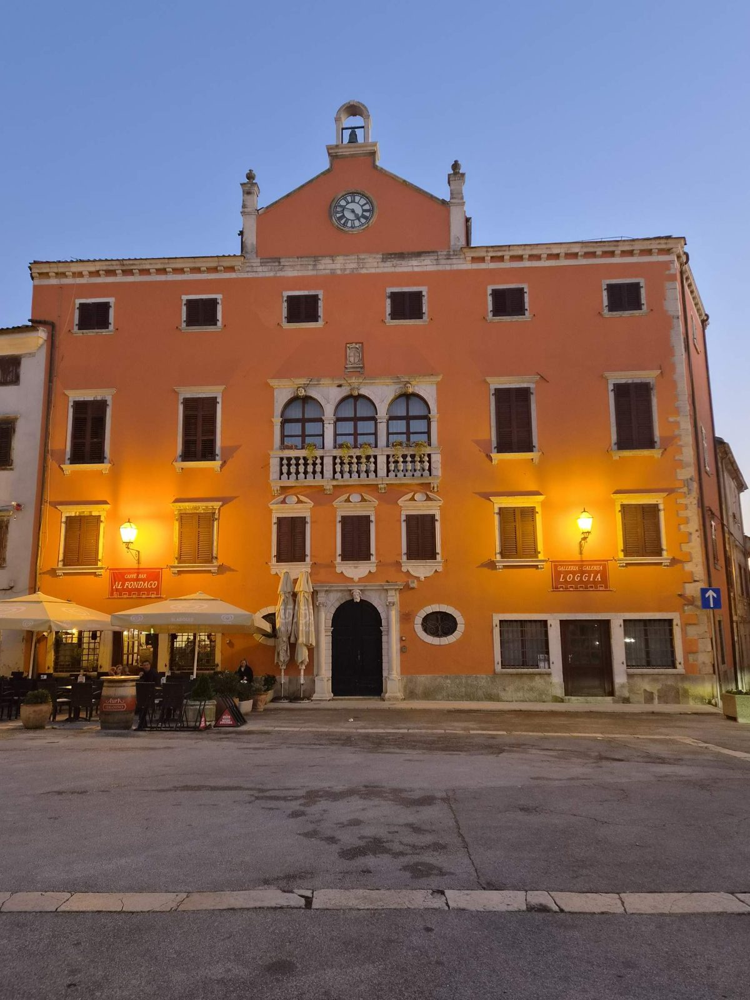
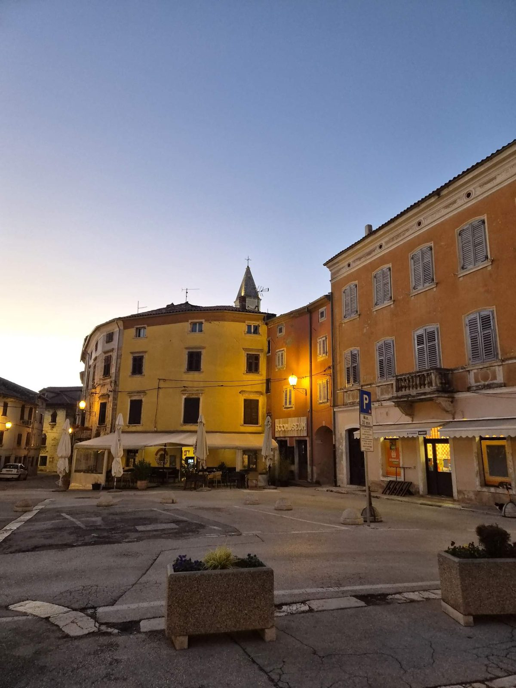
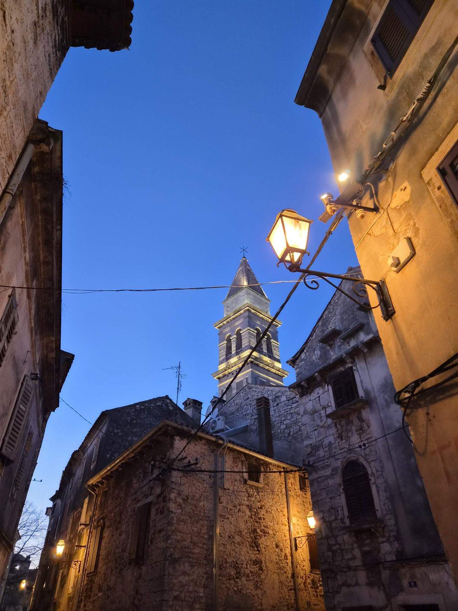
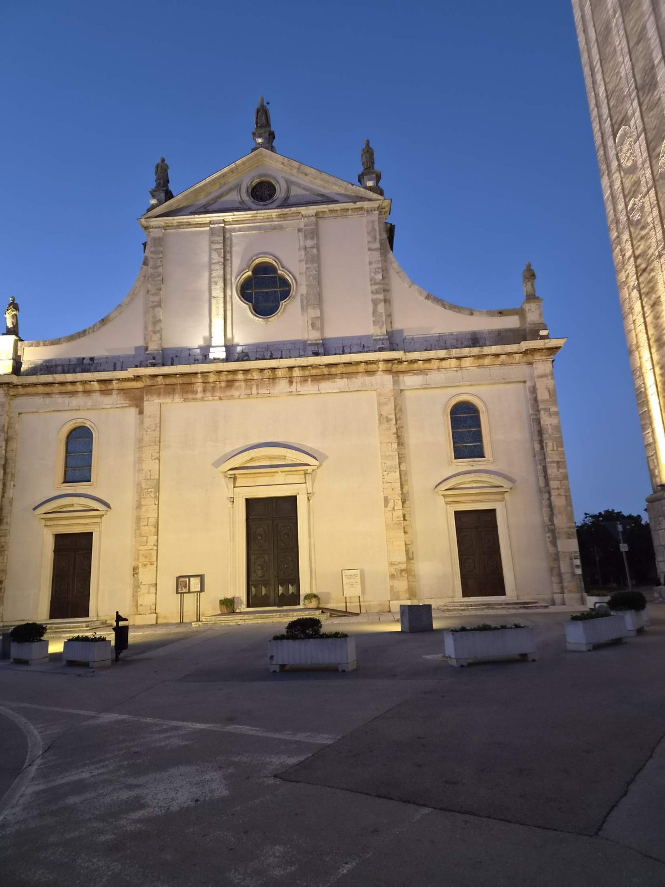
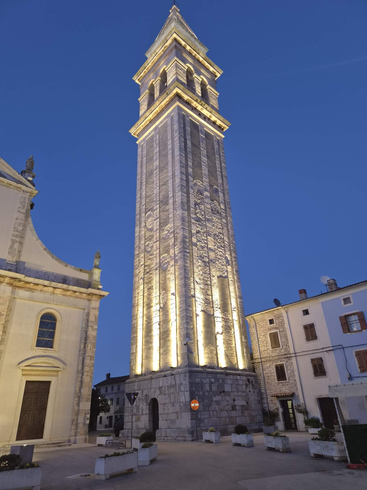

Subota, 21. studenoga. Vodnjan, Sajam mladih maslinovih ulja. Ručak na sajmu, a onda eksperiment: može li AI odraditi posao privatnog turističkog vodiča — uživo, na terenu, korak po korak?
Krenuo sam iz Ulice Svete Katarine. Crkvu sv. Katarine, Narodni trg, palače i uske kamene prolaze već sam obišao i fotografirao. Ostala je jedna velika stvar — crkva sv. Blaža. Sjeo sam na kavu na Narodnom trgu i Claudeu dao jasnu ulogu: ti si moj vodič, ja sam fotograf na terenu. Bez itinerara za čitanje. Jedna postaja, pa sljedeća.
Prvo što je napravio nije bila priča. Bila je provjera.
Prije ijedne anegdote javio mi je da se zbirka sakralne umjetnosti i mumije u sv. Blažu od listopada do kraja prosinca razgledavaju samo uz najavu. Dao je službeni broj župe i e-mail, uz napomenu da ne zna ima li zbog sajma produženo radno vrijeme — i da to pitam izravno.
To radi dobar vodič. Prvo logistika, onda romantika.
Najkorisnija rečenica cijele ture bila je: „Ovo nisam provjerio.”
Onda kava i priče. Narodni trg nastao je 1808., kad je srušen kaštel koji je stajao na tom mjestu. Grad je maknuo tvrđavu i od nje napravio dnevni boravak. Palača Bradamante, ona sa satom iz 1877., kroz stoljeća je bila venecijanska loža, skladište žita, sjedište načelnika, arhiv, zatvor i kazalište. Vijećnica koja izgleda srednjovjekovno sagrađena je 1910., u neogotičkom venecijanskom stilu.
Za važne tvrdnje naveo je izvore. Kad je nešto bilo njegovo tumačenje, a ne činjenica, to je i rekao.
Poslao sam fotku s terase. Sumrak, fenjeri na fasadama, ja ispod suncobrana.
Claude je opisao ono što je stvarno bilo na slici: upaljena svjetla na pročeljima dok je nebo još plavo, kamenu fasadu s balkonom bez žbuke, natpis „Ecomuseum” na prizemlju. Rekao je i da ne može sa sigurnošću reći koja je to palača, jer se s te udaljenosti ne vide ni grb ni natpis. I što se na fotki ne vidi — vijećnica i sat bili su mi iza leđa.
Nije izmišljao.
Navigacija je bila najslabija karika — ali poštena. Dobio sam kartu s dvije točke i procjenu: crkva je oko 150 metara zračne linije zapadno, dvije do četiri minute hoda. Uz napomenu da je to procjena, a ne izmjerena ruta, da ne vidi moj GPS i da nije provjerio naziv ulice. Uputa je bila jednostavna: prati zvonik. Visok je 62 metra, najviši u Istri.
Navigacije skretanje po skretanje nije bilo. U gradu s najvišim zvonikom u Istri nije ni trebala.
Najbolja priča došla je na putu do crkve i bila je skrojena po mjeri. Znao je zašto sam došao u Vodnjan.
Sv. Blaž građen je od 1760. do 1800., po modelu crkve sv. Petra u Veneciji, a projekt je koštao 13.000 zlatnih dukata. Platili su ga sami Vodnjanci: deset posto svih proizvoda, a zatim još deset godina deset posto vina i maslinova ulja.
Ulje zbog kojeg sam došao doslovno je ugrađeno u zidove te crkve. To nije podatak iz letka. To je priča koju zapamtiš.
Vrata su bila zatvorena.
Mumije sv. Leona Bemba, sv. Ivana Olinija i sv. Nikoloze Burse ostale su iza njih. AI je unaprijed rekao da se u ovo doba godine ulazi samo uz najavu. Imao je pravo. Ali vrata nije mogao otvoriti.
Što to znači za turizam?
AI vodič nije zamjena za čovjeka s ključem. Ali je ozbiljna zamjena za letak i audio-vodič koji ne zna koji je mjesec. Prilagodio se mojoj lokaciji, dobu dana, svjetlu i razlogu dolaska.
Za turističke zajednice, muzeje, hotele i obiteljske smještaje poruka je jasna: gost već ima vodiča u džepu. Pitanje je samo hoće li taj vodič čitati vaše točne i ažurne podatke — radno vrijeme, kontakte, ono „uz najavu” — ili tuđe, zastarjele.
U Vodnjanu nije presudila količina priča. Presudila je spremnost da kaže „ne znam”.
Sv. Blaža ostavljam za sljedeći put. S najavom.
Vodnjan kroz objektiv









Izvor: Istra.hr — Župna crkva sv. Blaža: zbirka sakralne umjetnosti
Izvor: Istra.hr — Palača Bradamante
Izvor: TZ Vodnjan — Narodni trg
Izvor: Istra.hr — Mumificirana tijela svetaca